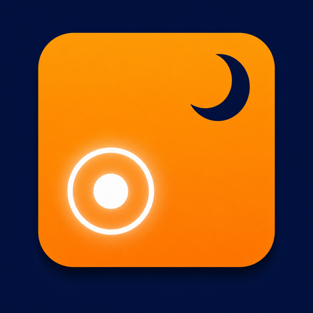

Chat with AI at the press of a button
Enter, Stop, Up, Down and more: the keys you use most in AI chats, as big buttons. Works with Claude, ChatGPT and Gemini.

NetamaPad 日本語Lie back on your bed or couch and control a Mac shown on AR glasses or a big screen, right from the iPhone in your hand. Chat with AI and watch videos with a comfy pad and big buttons.
Use the iPhone app together with the free NetamaPad for Mac. No Mac nearby? Try every control in the iPhone app's Practice mode.
Features
All the trackpad gestures you know, plus big buttons that are easy to press while lying down.
Enter, Stop, Up, Down and more: the keys you use most in AI chats, as big buttons. Works with Claude, ChatGPT and Gemini.
Slide, tap, two-finger scroll and right-click, touch and hold to grab.
Type or dictate, and the text lands where the cursor is on your Mac. Keep using the pad while you type.
Lying on your side? Up is still up. Night mode dims the screen so it's easy on your eyes.
Direct, encrypted Bluetooth. No servers, no data collected.
Get started
You only do this once. After that, just open the app and it connects automatically.
Download it with “Mac App” above, move it to your Applications folder and open it. Follow the setup window to turn on the permission to control your Mac (Accessibility).
Get it from the App Store and open it. A short welcome guide walks you through.
Choose “Add iPhone…” from NetamaPad in your Mac's menu bar, then tap “Connect to Mac” on your iPhone. When both screens show the same 6-digit code, tap “Same” on your iPhone and click “Allow” on your Mac.
Support
Email: info@arklio.jp
NetamaPad is made by an independent developer, so replies may take a few days.
Check that Bluetooth is on for both, and that the NetamaPad icon is in your Mac's menu bar. If they still won't connect, quit NetamaPad on your Mac and open it again. That usually fixes it.
On your Mac, open System Settings → Privacy & Security → Accessibility and make sure NetamaPad is turned on. After turning it on, open NetamaPad on your Mac again.
On any iPhone with the same Apple ID, open Settings → Pro and tap “Restore Purchases”. Family Sharing is supported too.